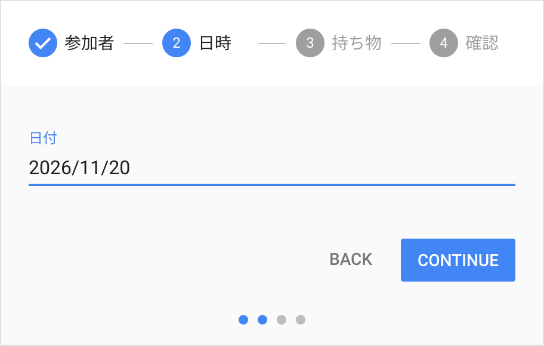

出典 / Source: m1.material.io/components/steppers.html（2026-11-13 参照）。寸法: 丸 24dp・12sp、現在の工程 14sp Medium（87% 黒、Google Blue 500）、未着手 38% 黒、つなぐ線 1dp Grey 400、工程の高さ 72dp。下はスマホ用の点の形。色と書体は M1 の初期値（Indigo 500・Roboto）で KM1 が再描画。/ Redrawn by KM1 from the published specs.